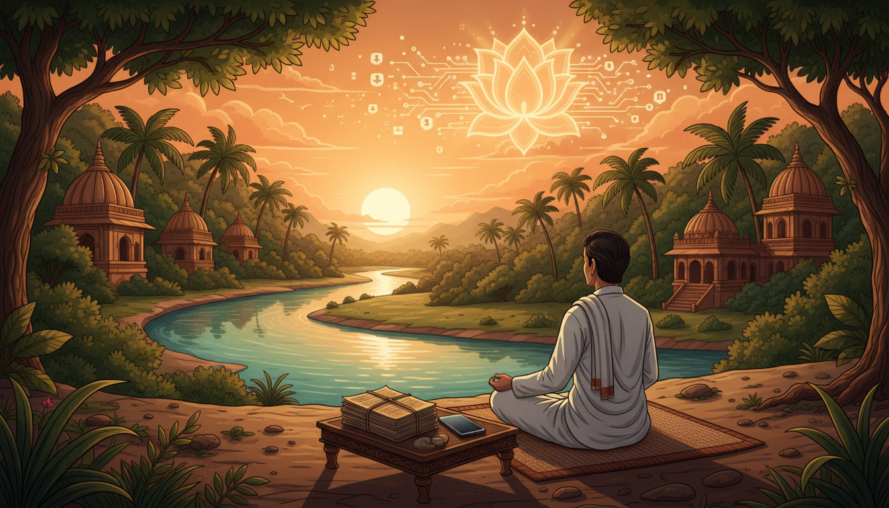

आज का युग 'हाइपर-कनेक्टिविटी' (Hyper-connectivity) का युग है, जहाँ हम पूरी दुनिया से तो जुड़े हैं, लेकिन स्वयं से टूट चुके हैं। सूचनाओं का यह अनवरत प्रवाह हमारे भीतर एक गहरा 'आंतरिक विखंडन' (Internal Fragmentation) पैदा कर रहा है। हज़ारों वर्ष पूर्व, भगवद गीता के छठे अध्याय (श्लोक 34) में अर्जुन ने मन की इसी अवस्था को 'चंचल, प्रमथी, बलवान और दृढ़' बताते हुए कहा था कि इसे वश में करना 'वायु को रोकने' के समान दुष्कर है।

आज के डिजिटल युग में, जहाँ एल्गोरिदम हमारे अवचेतन को नियंत्रित कर रहे हैं, हमारा मन उस 'मत्त वानर' (Drunken Monkey) की भाँति हो गया है जिसे बिच्छू ने काट लिया हो। यह डिजिटल ओवरलोड केवल मानसिक थकान ही नहीं, बल्कि पित्त और वात दोषों को असंतुलित कर अनिद्रा, तनाव और निर्णय लेने की क्षमता में ह्रास का कारण बन रहा है।
अंतःकरण और डिजिटल प्रभाव: हमारा 'आंतरिक तंत्र' कैसे काम करता है?
वैदिक मनोविज्ञान के अनुसार, हमारा 'आंतरिक उपकरण' या 'अंतःकरण' चार सूक्ष्म घटकों से बना है। आधुनिक तकनीक इन चारों को गहरे स्तर पर प्रभावित करती है:
| घटक | प्राथमिक कार्य | डिजिटल युग में प्रभाव |
|---|---|---|
| मनस (Manas) | संवेदी बोध और इंद्रिय समन्वय | सूचनाओं की बौछार से ध्यान का विखंडन और निरंतर 'डोपामाइन' की खोज। |
| बुद्धि (Buddhi) | विवेक और निर्णय शक्ति (Viveka) | एल्गोरिदम बुद्धि को 'बाईपास' कर सीधे निम्न मनस को उत्तेजित करते हैं, जिससे स्वतंत्र निर्णय शक्ति क्षीण होती है। |
| अहंकार (Ahamkara) | आत्म-बोध और पहचान (I-ness) | डिजिटल पहचान की तुलना और बाहरी मान्यताओं (Likes/Shares) के माध्यम से अहम् का असुरक्षित पोषण। |
| चित्त (Chitta) | संस्कारों और स्मृतियों का भंडार | अनवरत स्क्रॉलिंग से चित्त में गहरे 'संस्कार' (Subconscious grooves) बन जाते हैं, जो व्यसन का आत्म-परिपक्व चक्र निर्मित करते हैं। |
आयुर्वेदिक सिद्धांतों पर आधारित 5 व्यावहारिक डिजिटल डिटॉक्स आदतें
आयुर्वेद के अनुसार, डिजिटल डिटॉक्स केवल तकनीक का त्याग नहीं, बल्कि इंद्रियों का 'प्रत्याहार' (Pratyahara) है। यहाँ पाँच आदतें दी गई हैं:
- निर्धारित "फोन उपवास" (Phone Fasts): प्रतिदिन 1-2 घंटे फोन से पूर्ण दूरी। यह वात को शांत कर चिंता घटाता है, पित्त की चिड़चिड़ाहट को कम करता है और कफ की उस जड़ता को तोड़ता है जो अंतहीन स्क्रॉलिंग से आती है।
- एकल-कार्य माइंडफुलनेस (Single-Tasking): मल्टीटास्किंग हमारे ध्यान को खंडित करती है। एक समय में एक ही कार्य करना वात और पित्त के संतुलन के लिए अनिवार्य है। भोजन करते समय केवल भोजन का रसास्वादन करें।
- प्रकृति के सूक्ष्म क्षण (Micro-Moments of Nature): स्क्रीन के बजाय पौधों या आकाश को देखना। यह वात को सुदृढ़ (Grounding) करता है, पित्त को शीतलता देता है और बिना किसी कृत्रिम उत्तेजना के कफ को स्फूर्ति प्रदान करता है।
- मौन का श्रवण (Listening to Silence): प्रतिदिन 5 मिनट पूर्ण मौन। यह वात की चंचलता और मानसिक शोर को शांत करता है। मौन हमारी इंद्रियों को 'रिकैलिब्रेट' (Recalibrate) करने का सबसे शक्तिशाली साधन है।
- गहरी सांस लेने का अंतराल (Deep Breathing): 'नाड़ी शोधन' जैसे प्राणायाम का 2-5 मिनट अभ्यास। यह डिजिटल थकान के बीच एक 'रिसेट बटन' की तरह कार्य करता है, जो पित्त को शांत और वात को स्थिर करता है।
तीन गुण: आपका डिजिटल उपभोग किस श्रेणी में है?
प्रकृति के तीन गुण—सत्व, रजस और तामस—हमारे डिजिटल व्यवहार को निर्धारित करते हैं:
- सत्व (Sattva): स्पष्टता और शांति (जैसे: ध्यान ऐप, ज्ञानवर्धक सामग्री)। यह मन को जागरूक बनाता है।
- रजस (Rajas): उत्तेजना और बेचैनी (जैसे: सोशल मीडिया पर तुलना, सूचनाओं का पीछा करना)। यह जलन (Burnout) पैदा करता है।
- तामस (Tamas): जड़ता और सुस्ती (जैसे: डूम-स्क्रॉलिंग, बिना सोचे-समझे बिंज-वॉचिंग)। यह विवेक को नष्ट करता है।
साधना का मार्ग: तामस से रजस और रजस से सत्व की ओर बढ़ें। किंतु याद रखें, गीता (14.20) के अनुसार, सत्व भी एक 'सुनहरी जंजीर' है; अंतिम लक्ष्य इन तीनों गुणों से ऊपर उठकर गुणातीत होना है।
इंद्रियों का नियंत्रण: 'ग्रह' और 'अतिग्रह' का विज्ञान
बृहदारण्यक उपनिषद में 'ग्रह' (इंद्रियां) और 'अतिग्रह' (विषय) का गंभीर सिद्धांत है। आधुनिक एल्गोरिदम साधारण विषय नहीं, बल्कि 'अतिग्रह' हैं। ये एक पहलवान या मगरमच्छ की 'वज्र मुष्टि' (Vice-like grip) की तरह हैं, जो हमारी इंद्रियों को जकड़ लेते हैं।
कठोपनिषद का रथ रूपक हमें समाधान देता है: हमारा शरीर रथ है, इंद्रियां घोड़े हैं, मन लगाम है और बुद्धि 'सारथी' है। यदि सारथी (बुद्धि) सो गया, तो डिजिटल एल्गोरिदम रूपी 'अतिग्रह' घोड़ों को कहीं भी ले जाएंगे। हमें अपनी बुद्धि को पुनः जाग्रत कर लगाम थामनी होगी।
भगवद गीता का समाधान: अभ्यास और वैराग्य
भगवान कृष्ण मन को वश में करने के दो ही मार्ग बताते हैं:
- अभ्यास (Abhyasa): गीता (6.26) कहती है—"यतो यतो निश्चरति मनश्चञ्चलमस्थिरम्..." अर्थात जहाँ-जहाँ मन भटके, उसे वहाँ-वहाँ से वापस लाएं। यह कोई युद्ध नहीं, बल्कि 'कोमलता से वापसी' (Gentle Return) का धैर्यवान प्रयास है। शांति विचारों की अनुपस्थिति नहीं, बल्कि बार-बार केंद्र पर लौटने की इच्छा है।
- वैराग्य (Vairagya): डिजिटल फीडबैक (Like/Share) के परिणामों से अनासक्ति। जब हम बाहरी प्रशंसा की 'थर्स्ट' (Thirst) छोड़ देते हैं, तो तकनीक का बंधन स्वतः टूट जाता है।
डिजिटल धर्म: आधुनिक जीवन के लिए दिशा-निर्देश
- [ ] जानबूझकर अज्ञानता (Intentional Ignorance): हर जानकारी को जानना आवश्यक नहीं है। इसे 'सर्वज्ञता का पश्चाताप' (Repentance of Omniscience) समझें—स्वीकार करें कि हमारा मानवीय मस्तिष्क ब्रह्मांड का सारा डेटा संसाधित करने के लिए नहीं बना है। 'परमेश्वर' पर भरोसा करें और अपनी सीमाओं को पहचानें।
- [ ] स्क्रीन-मुक्त क्षेत्र (Device-Free Zones): शयनकक्ष और भोजन की मेज को पवित्र रखें।
- [ ] डिजिटल उपवास: सोने से 1 घंटे पहले और उठने के 1 घंटे बाद तक स्क्रीन वर्जित।
- [ ] ऊर्जा का उच्च प्रयोग: अपनी मानसिक ऊर्जा को मनोरंजन के तामस से हटाकर सत्व और आत्म-विकास की ओर मोड़ें।
निष्कर्ष: सद्भाव ही लक्ष्य है
डिजिटल डिटॉक्स तकनीक का विरोध नहीं, बल्कि स्वयं के समय और चेतना पर पुनः अधिकार है। यहाँ हमें 'यांत्रिक बुद्धि' (AI) और 'चित्त' (Pure Consciousness) के बीच का भेद समझना होगा। AI डेटा पर आधारित एक मशीन है, जबकि आपकी चेतना (Chit) अनंत और स्वतंत्र है।
जैसा कि उपनिषदों में कहा गया है—"ब्रह्मविद आप्नोति परम" (ब्रह्म का ज्ञाता ही परम शांति प्राप्त करता है)। स्वयं के साथ जुड़ना ही वास्तविक डिजिटल स्वतंत्रता है। तकनीक को अपना सेवक रहने दें, उसे अपना 'सारथी' न बनने दें।
Sources
NotebookLM notebook: 619f1e04-7ad5-4f67-aab1-72897b1af79e
- Taming the Digital Mind: Hindu Wisdom for a Hyper-Connected Age
- The Digital Age Dharma: Applying Bhagavad Gita Wisdom to Navigate Technology in 2025
- AI's wisdom: Navigating digital age with ancient Indian philosophy ...
- Dharma in the Age of AI: Staying Aligned from Within | by Amaia ...
- The Gita in the Digital Age Focus, Discipline, and Detachment - The Grand - EduRev
- 5 Simple Digital Detox Habits for a Calmer, Clearer Mind
- The Four Parts of Mind in Yoga - Buddhi, Manas, Ahankara and Chitta
- Yog , Chitta, Vritti, Nirodha. योगश्चित्तवृत्तिनिरोध | Samadhi Pada ||… | by Navneet S Maini
- Understanding The Vedic Model Of The Mind - Swarajya
- 8 Shlokas from the Bhagavad Gita that help keep your mind calm - The Times of India
- Distracted by Everything? The Bhagavad Gita Explains Why - YourStory.com
- Digital Vedanta: A Notion where Eternal Truth Meets Artificial Intelligence - ResearchGate
- Pratyahara | YogaRenew
- Pratyahara: Mastering of the Senses - Spirit Body Yoga Studio
- Yoga Sutra: Yoga Chitta Vritti Nirodaha - CCE Finland
- Complete Guide To The 3 Gunas Of Nature | Arhanta Yoga Blog
- The Gunas Explained: How Sattva, Rajas & Tamas Influence Your Life - Project Bhakti
- Sattva Rajas Tamas Gunas: Understanding the Three Forces of Nature for Inner Balance
- The Three Gunas—Sattva, Rajas, and Tamas - Hridaya Yoga
- Guṇa - Wikipedia
- Bhagavad Gita shloka of the day to calm a restless mind | - The ...
- Self-Control according to the Bhagavad Gita
- Indian Mind: Manas, Chitta, Buddhi, Ahamkara | PDF | Bhagavad Gita | Yoga - Scribd
- Pratyahar - Patanjali Yog Sutra
- Digital Age, Anxious Minds: How Yoga Supports Mental Health in a Hyperconnected World
- Digital Detox | Kamlesh D Patel - Daaji.org
- Digital Detox, Intentional Ignorance, and the Proximity Principle | For The Church
- Mind–Its Mysteries and Control - The Divine Life Society
- Mauna: The Divine Language of Silence in Vedic Tradition - Awakening Times
- "Thirteenth Spiritual Instruction" by Swami Chidananda: Vow of Silence - Satsang
- Mauna: The State of Silence - Hridaya Yoga
- Mauna(Silence) and Introspection - Sivanandaonline.org
- Mauna (silence) - Wikipedia)
- The Subtlety of Silence: Mauna from Ethical Practice to Essential State
- The Ancient Wisdom Behind Tomorrow's AI - The Wire
- Hinduism Has an Innate Form of AI
- Living the Yoga Life: Manas (Mind) and Buddhi (Intelligence/Intellect)
- How do Vedic texts describe the different levels of consciousness in human beings? - Quora
- Mind and consciousness in yoga – Vedanta: A comparative analysis with western psychological concepts - PMC
- What Is The Role Of Pratyahara In Contemporary Yoga Practice? - Yoganatomy
- Pratyahara – Healing the Disease of Disconnection - Jivamukti Yoga
- Digital Dharma: Translating Upanishadic Wisdom for the Age of Social Media | Request PDF
- Turn Off the Vrittis - Awakening Self
- BRIHADARANYAKA UPANISHAD (10)-YAJNAVALKYA-KANDA-CHAPTER III - eSamskriti~Yajnavalkya~Kanda~Chapter-Iii-1.aspx)
- Many Gods and One Brahman - The Brihadaranyaka Upanishad - Chapter III
- Divine Immanence and the Correlativity of All Things - The Essence of the Brihadaranyaka Upanishad - Chapter 3 - Swami Krishnananda
- Digital Dharma: How AI Can Elevate Spiritual Intelligence and Personal Well-Being
- Patanjali's Words: Viveka (Discriminative Discernment) - Integral Yoga® Magazine
- Man Buddhi Deh Chitta : r/AdvaitaVedanta - Reddit
- Digital Detox: Reclaim Your Mind From Social Media Addiction
- Brihadaranyaka Upanishad - Wikipedia
- Brihad aranyaka and chandogya upanishad - secret blogger - WordPress.com
- The Knowledge of Brahman - CWSA - Kena and Other Upanishads